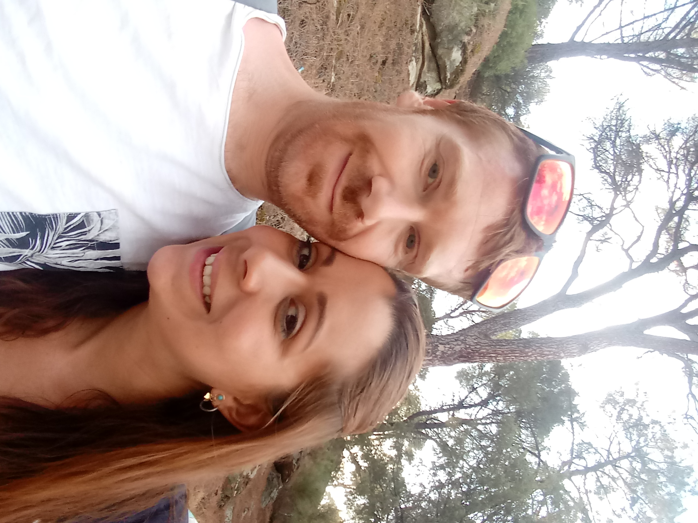

Jeannny Gongora, desde el día en que te conocí supe que podríamos tener algo especial. Normalmente soy muy tímida y no me acerco a las chicas que me gustan. Me resultó fácil contigo y supe que quería estar contigo. PORQUE ERES ESPECIAL
Nuestro tiempo juntos ha sido difícil por muchas razones.
- Primero viví un largo camino fuera de la ciudad y terminamos tarde en la noche, y solo nos veíamos en el trabajo.
- despues el trabajo nos causaba problemas todo el tiempo en nuestra vida personal
- El bar cerró y ha tenido problemas para encontrar trabajo donde está contento y cómodo.
- Quería tener tiempo para estudiar y disfrutar el verano (no he disfrutado el verano y he estado estresado y deprimido